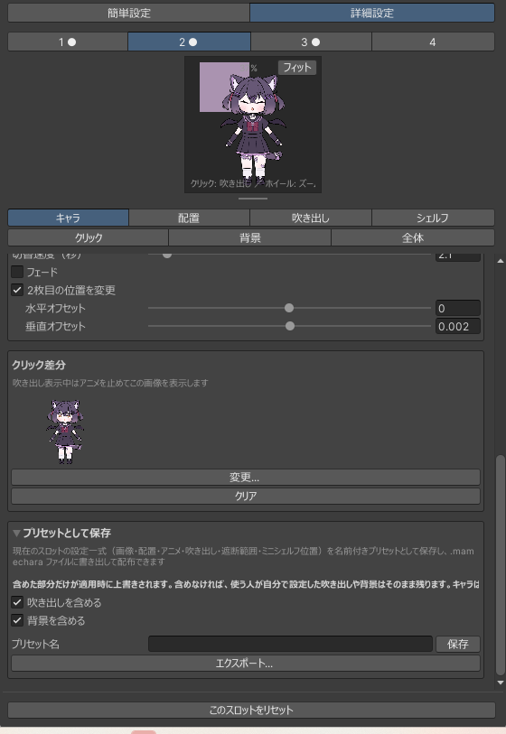

プリセットを配る
組み立てたキャラは.mamecharaという1ファイルに書き出せます。画像も中に入るので、受け取った人はファイルを1つ読み込むだけで同じキャラになります。配布・販売・友人に渡す、どれも同じ手順です。
書き出す
詳細設定のキャラタブを下までスクロールするとプリセットとして保存があります。開くと2つの操作があります。
- 保存
-
名前を付けてこのプロジェクトの中に保存します。自分用の呼び出し先です。
ProjectSettings/MameChara/に入るので、プロジェクトの外には出ません。 - エクスポート...
.mamecharaファイルに書き出します。配布するのはこちら。画像がファイルの中に入るので、渡す相手に画像を別送する必要はありません。
書き出されるのは選んでいるスロットの設定一式（画像・配置・アニメ・吹き出し・遮断範囲・ミニシェルフ位置）です。
{kind=link}

何を含めるかを決める
キャラは必ず入ります。そのうえで、吹き出しと背景は含めるかどうかを選べます。
| チェック | 入れると | 入れないと |
|---|---|---|
| 吹き出しを含める | 吹き出しの画像・セリフ・位置が一緒に届く | 相手が自分で設定した吹き出しがそのまま残る |
| 背景を含める | 専用ウィンドウの背景も一緒に届く | 相手の背景設定はそのまま残る |
プリセットの適用は含まれている部分だけを上書きします。だから「キャラだけを配る」プリセットは、受け取った人が自分で用意した吹き出しや背景を壊しません。
逆に、世界観をまるごと届けたいなら両方入れてください。キャラだけのプリセットと、全部入りのプリセット、どちらも同じ.mamecharaです。受け取った側が中身を意識する必要はありません。
同梱の画像を使うとファイルが小さくなる
吹き出しに同梱の画像から選ぶ...で選んだ既定の吹き出しを使っている場合、書き出したファイルには画像そのものは入らず、参照だけが記録されます。 MameChara を持っている人なら同じ画像が手元にあるので、持ち運ぶ必要がないからです。
そのぶんファイルはとても小さくなります。自前の吹き出しを描いた場合は、ふつうに画像が中に入ります。
配る前に確かめること
- 別のスロットに読み込んで開き直す。書き出したファイルを空きスロットに適用して、意図した見た目になるか確かめてください。ここで初めて「含めるのを忘れていた」に気づけます。
- 吹き出しを含めないなら、セリフも届きません。セリフはキャラではなく吹き出し側の情報です。言わせたいことがあるなら吹き出しを含めてください。
- スケールは相手の環境で変わります。立ち位置と大きさは受け取った人が調整する前提で作ってください（プリセットを使うでもそう案内しています）。
- ウィンドウ上でドラッグした位置は入りません。書き出されるのは初期位置だけです。ウィンドウごとの上書きは相手の環境の話なので、プリセットには含まれません。
- 日本語と英語の両方で見ておく。 UI は全体タブで切り替えられます。セリフは自分で書いたものがそのまま出るので、どちらの言語で使われるかを想定して書いてください。
ファイルの中身
技術的な話が必要な人向けに。
.mamechara |
プリセット1つ分。中身は ZIP で、preset.jsonとimages/が入っています。現在の形式はformatVersion 4です。
|
.mamecharaset | 自分の環境をまるごと持ち出すためのファイル。4スロット分の設定と画像、表示先、全体オプションが入ります。配布用ではありません。読み込むと相手の設定を全部置き換えてしまいます。 |
formatVersion 3以前の古い.mamecharaは「全部入り」として読まれます。含める・含めないという考え方が無かった頃のファイルは、実際に全部持っていたからです。
受け取る人がすることは設定を開いて「プリセットを適用...」でファイルを選ぶだけです。プリセットを使うのページをそのまま案内してもらえます。